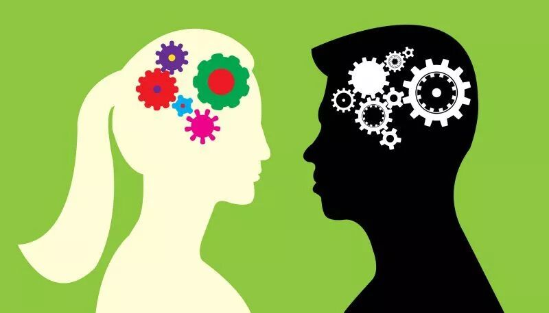

--------点击蓝字关注我--------
--------点击蓝字关注我--------

之前文章《AI与人共存的世界是什么样子的，现在AI到底能做到啥？》里提到的那位读者还问了我这样一个问题：面对情感问题，男生和女生的解决思路有什么不同？
我想了又想，尽量刨除了那些男女的共通点，找出了一个我认为最重要的男生与女生的不同点。
一.
我觉得男女在这点上的最大的不同在于对情感的感受力的不同。
男生相对来说对情感层面的感受力更加弱一些，因此在说话的时候相对来说不太会有意识地照顾到别人的情绪，同时也不太会因为别人的话而激发起情绪。
而女生在情感层面的感受力更强，因此在说话的时候会更有意识地照顾到别人的情绪，同时也会更容易被别人的话带动情绪。
举个例子来说，比如说一群男生在聊找对象的事情，如果说到相对矮的男生在婚恋市场上竞争力相对比较差，可能在现场一起聊天的男生会觉得有点不舒服，但是也就还好，不会特别觉得这个讨论是在针对自己（这里假设大家都是比较好的朋友，并没有有谁有恶意）。
而如果一群女生在聊同样的问题，比如说到长得比较胖的女生在婚恋市场上竞争力相对比较差，可能在场的不是特别瘦的女生就不仅仅是不舒服了，而是会更加生气一点，甚至会觉得那个挑起话题的人是在针对自己。
二.
情感上的感受力的不同还带来了另外一点重要的差异。
男生由于相对来说情感上感受力偏弱，而对说理的感受力偏强，因此倾向于用说理的方式去沟通情感问题，分析一个问题的利弊。
而女生由于情感上感受力偏强，因此倾向于诉诸情感，虽然看似沟通的是具体的问题，其实沟通的是其背后的情绪。
三.
由于男生和女生在这点上的差异，男生和女生都会容易犯对应的错误。
男生容易在说话的时候，觉得自己明明就事论事，说的事情都是事实，女生莫名其妙就生气了。其实有的女生可能只要觉得这个触犯到了自己的立场，就没法再管这个事情是不是事实了，立刻就会产生厌恶的情绪。
而女生则容易在听别人说话的时候，觉得说话的人完全不会照顾别人的情绪，立刻跟着情绪全盘否定一个人。其实有的男生可能只是情绪感受力特别弱，所以很难察觉到什么话会引起别人的反感，而不是真的有恶意。
四.
如果我们去观察那些特别受异性欢迎的人，其实往往是那些能理解对方立场的人。
比如一个很受女生欢迎的男生，一般很能察觉女生的情绪，在女生情绪来了的时候也会知道如何从情绪层面去进行沟通。
一个很受男生欢迎的女生，一般会适应男生的那种沟通方式，虽然会怼回去但是不太真的会当回事。
我觉得这个还真的蛮需要天赋的，对于很多人来说学习这个是非常反直觉的（比如我）。不过学一点总比不学好。